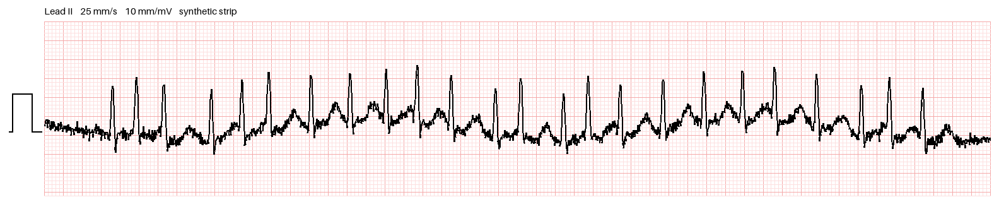
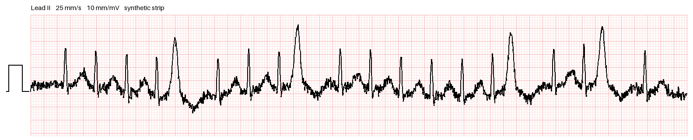
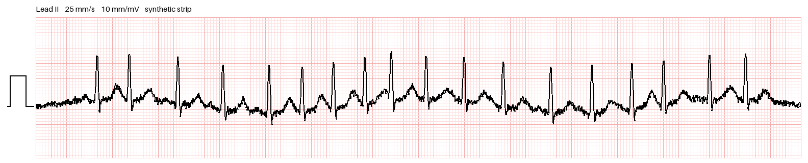
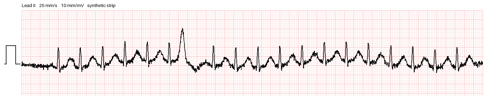
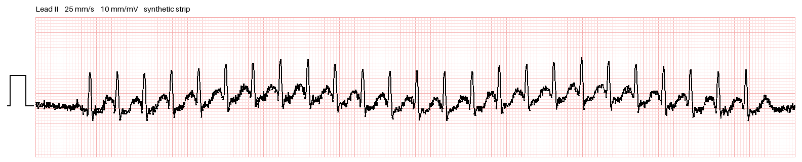
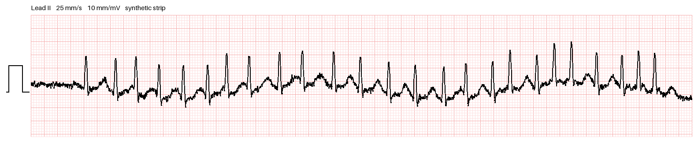
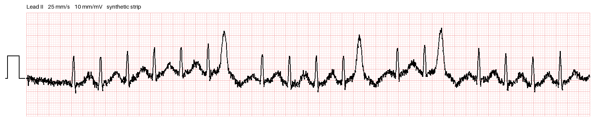
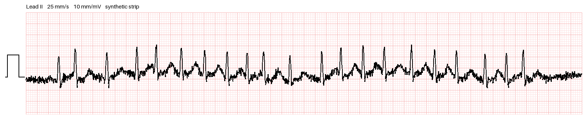
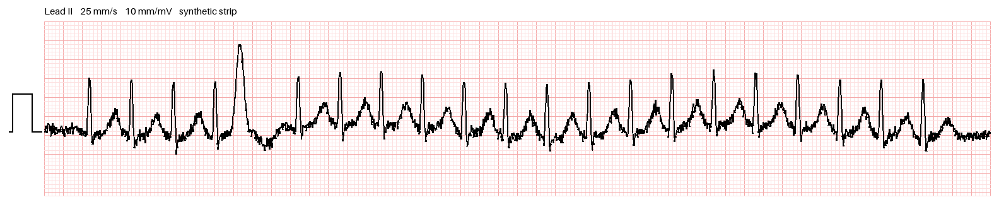
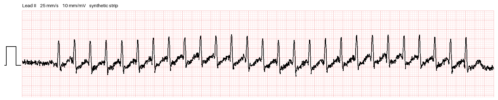

These are synthetic measuring-and-counting tasks made from a seeded generator. They are not clinical cases and nothing here is a diagnosis or medical advice.
Look at each picture, work out your own answer, then open “Show correct answer”.

Question: This is a 10-second ECG rhythm strip (standard grid: 25 mm/s). How many QRS complexes (heartbeats) are on the strip? Give a whole number.
Correct answer: 24 (exact)
Drawn from tasks/data/ecg_beat_count_000.json (seed 183193602768262).
| model | answered | marked |
|---|---|---|
| Claude Haiku 5.5 | 24 | correct |
| GPT-6 Luna | 24 | correct |

Question: Count the beats on this strip that come earlier than expected and look different from the rest (wider, taller, no preceding small bump). How many are there? Give a whole number.
Correct answer: 4 (exact)
Drawn from tasks/data/ecg_ectopic_count_000.json (seed 217855308976099).
| model | answered | marked |
|---|---|---|
| Claude Haiku 5.5 | 4 | correct |
| GPT-6 Luna | 4 | correct |

Question: Measure on the grid (large box = 5 mm = 0.2 s) the distance from the tall peak of beat 2 to the tall peak of beat 10 (beats counted from the left, first beat = 1). How many large boxes is it? Answers within +/-0.5 of the correct value are accepted.
Correct answer: 19.4 (accepted: within +/-0.5)
Drawn from tasks/data/ecg_interval_000.json (seed 145209111897439).
| model | answered | marked |
|---|---|---|
| Claude Haiku 5.5 | 19.4 | correct |
| GPT-6 Luna | 11.6 | wrong |

Question: One beat on this 10-second ECG rhythm strip arrives early and looks wider and taller than the others. Counting the QRS complexes from the left and starting at 1, which beat is it? Give a whole number.
Correct answer: 7 (exact)
Drawn from tasks/data/ecg_premature_beat_000.json (seed 250473614012519).
| model | answered | marked |
|---|---|---|
| Claude Haiku 5.5 | 7 | correct |
| GPT-6 Luna | 7 | correct |

Question: This is a steady 10-second ECG rhythm strip (standard grid: 25 mm/s, large box = 0.2 s). Using the spacing between consecutive beats (not by counting the beats in the strip and multiplying), what is the heart rate in beats per minute? Answers within +/-3 of the correct value are accepted.
Correct answer: 167 (accepted: within +/-3)
Drawn from tasks/data/ecg_rate_000.json (seed 186563790547137).
| model | answered | marked |
|---|---|---|
| Claude Haiku 5.5 | 167 | correct |
| GPT-6 Luna | 167 bpm | correct |

Question: This is a 10-second ECG rhythm strip (standard grid: 25 mm/s). How many QRS complexes (heartbeats) are on the strip? Give a whole number.
Correct answer: 25 (exact)
Drawn from tasks/data/ecg_beat_count_001.json (seed 77445202232809).
| model | answered | marked |
|---|---|---|
| Claude Haiku 5.5 | 25 | correct |
| GPT-6 Luna | 25 | correct |

Question: Count the beats on this strip that come earlier than expected and look different from the rest (wider, taller, no preceding small bump). How many are there? Give a whole number.
Correct answer: 3 (exact)
Drawn from tasks/data/ecg_ectopic_count_001.json (seed 163845755467807).
| model | answered | marked |
|---|---|---|
| Claude Haiku 5.5 | 3 | correct |
| GPT-6 Luna | 3 | correct |

Question: Measure on the grid (large box = 5 mm = 0.2 s) the distance from the tall peak of beat 7 to the tall peak of beat 13 (beats counted from the left, first beat = 1). How many large boxes is it? Answers within +/-0.5 of the correct value are accepted.
Correct answer: 12.26 (accepted: within +/-0.5)
Drawn from tasks/data/ecg_interval_001.json (seed 231026789173078).
| model | answered | marked |
|---|---|---|
| Claude Haiku 5.5 | 12.2 | correct |
| GPT-6 Luna | 12.3 | correct |

Question: One beat on this 10-second ECG rhythm strip arrives early and looks wider and taller than the others. Counting the QRS complexes from the left and starting at 1, which beat is it? Give a whole number.
Correct answer: 5 (exact)
Drawn from tasks/data/ecg_premature_beat_001.json (seed 124924982250635).
| model | answered | marked |
|---|---|---|
| Claude Haiku 5.5 | 5 | correct |
| GPT-6 Luna | 5 | correct |

Question: This is a steady 10-second ECG rhythm strip (standard grid: 25 mm/s, large box = 0.2 s). Using the spacing between consecutive beats (not by counting the beats in the strip and multiplying), what is the heart rate in beats per minute? Answers within +/-3 of the correct value are accepted.
Correct answer: 181 (accepted: within +/-3)
Drawn from tasks/data/ecg_rate_001.json (seed 279154476071028).
| model | answered | marked |
|---|---|---|
| Claude Haiku 5.5 | 180 | correct |
| GPT-6 Luna | 180 bpm | correct |